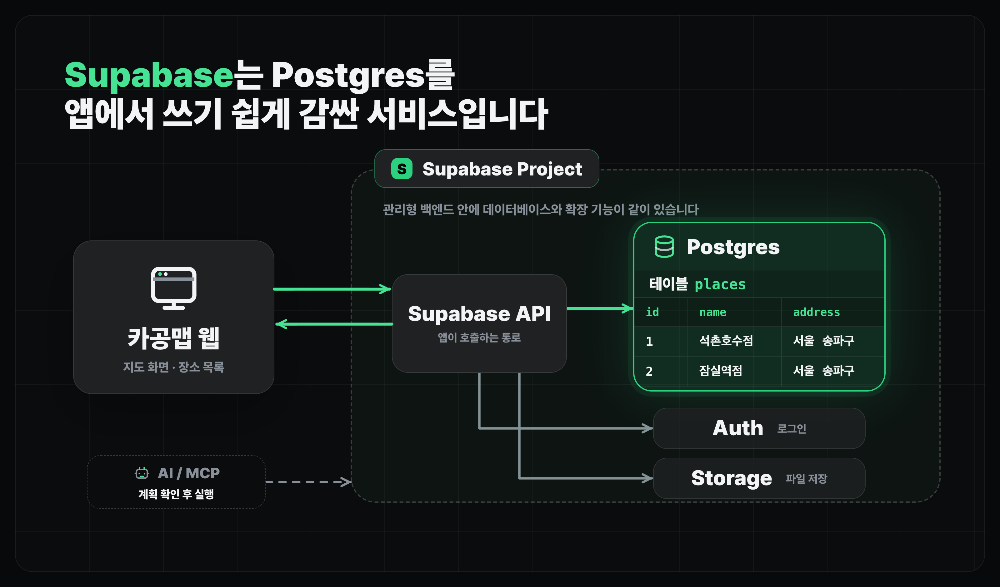
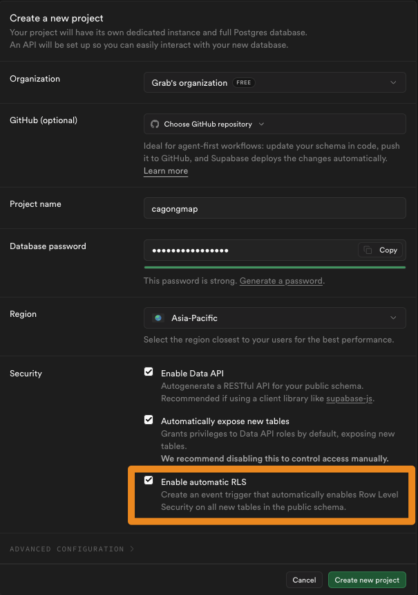
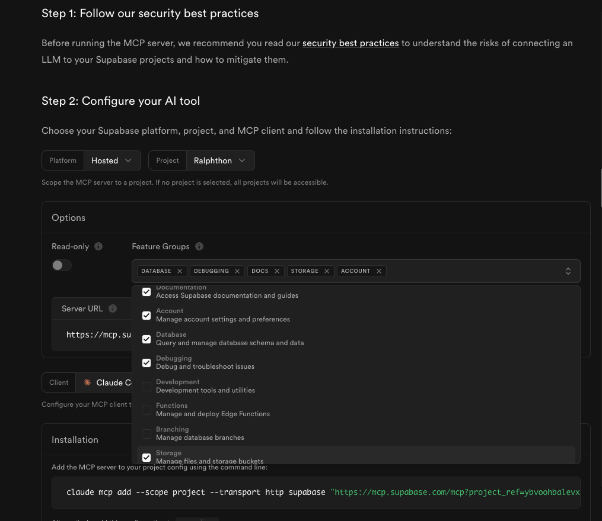
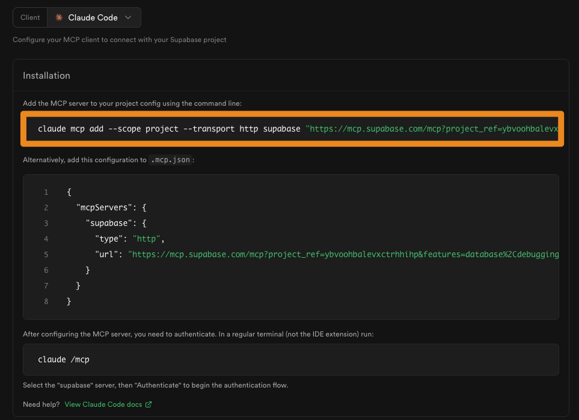

지도 데이터베이스 구축하기
Supabase 활용하기
Supabase 프로젝트를 만들고 MCP 연결 전 권한을 확인합니다.
얻어갈 것
- Supabase를 "Postgres 데이터베이스를 쉽게 쓰게 해주는 서비스"로 이해합니다.
- Supabase를 설정하고 MCP를 활용해 Claude Code와 연결합니다.
Supabase는 무엇인가
- Supabase는 Postgres를 중심으로 인증, Storage(파일 저장소), API 접근 기능을 묶어 제공하는 백엔드 서비스입니다.
- 이번 프로젝트에서는 그중 데이터베이스 기능을 먼저 사용합니다.
- 처음부터 백엔드 서버를 길게 만들지 않아도, 앱에서 Supabase로 테이블 데이터를 읽고 쓸 수 있습니다.

왜 Supabase를 쓰는가
- 무료로 사용이 가능합니다.
- 데이터베이스를 직접 설치하고 운영하는 부담을 줄일 수 있습니다.
- 인증과 Storage까지 같은 프로젝트 안에서 이어 붙이기 쉽습니다.
- AI에게 테이블 생성, SQL 초안, 데이터 입력 흐름을 맡기기 좋습니다.
Supabase 설정하기
- Supabase에 로그인한 뒤 새 프로젝트를 만듭니다.
- 프로젝트가 준비되면 MCP 연결에 필요한 권한과 명령어를 확인합니다.

- Supabase MCP 설치 방법은 공식 문서를 참고합니다.


- 다른 터미널에서 Claude MCP 등록 명령을 실행하고
/mcp로 연결 상태를 확인합니다. - Claude Code에서 세션 별로 MCP 상태가 공유되지 않으니, 필요에 따라 세션을 종료하고 Resume해서 다시 접속하시면 mcp 연결을 확인할 수 있습니다.